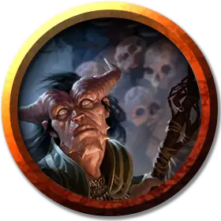

Некромант
Necromancer
Средний Гуманоид (Любая раса), любое мировоззрение

Класс Доспеха 12 (15 с доспехами мага)
Хиты 66 (12к8 + 12)
Скорость 30 футов
| мод | спас | ||
|---|---|---|---|
| СИЛ | 9 | −1 | −1 |
| ЛОВ | 14 | +2 | +2 |
| ТЕЛ | 12 | +1 | +1 |
| мод | спас | ||
|---|---|---|---|
| ИНТ | 17 | +3 | +7 |
| МДР | 12 | +1 | +5 |
| ХАР | 11 | +0 | +0 |
Навыки История +7, Магия +7
Сопротивление урону некротическая энергия
Чувства пассивное Восприятие 11
Языки любые четыре языка
Опасность 9 (5000 опыта)
Бонус мастерства +4
Среда обитания Город, Арктика
Особенности
Использование заклинаний. Некромант является заклинателем 12-го уровня. Его базовой характеристикой является Интеллект (Сл спасброска от заклинания 15, +7 к попаданию атаками заклинаниями). У него подготовлены следующие заклинания волшебника:
• Заговоры (неограниченно): леденящее прикосновение [chill touch], пляшущие огоньки [dancing lights], волшебная рука [mage hand], починка [mending].
• 1 уровень (4 ячейки): псевдожизнь [false life], доспехи мага [mage armor], луч болезни [ray of sickness].
• 2 уровень (3 ячейки): глухота/слепота [blindness/deafness], луч слабости [ray of enfeeblement], паутина [web].
• 3 уровень (3 ячейки): восставший труп [animate dead], проклятие [bestow curse], прикосновение вампира [vampiric touch]*.
• 4 уровень (3 ячейки): усыхание [blight],* переносящая дверь [dimension door], каменная кожа [stoneskin].
• 5 уровень (2 ячейки): длань Бигби [bigby’s hand], облако смерти [cloudkill].
• 6 уровень. (1 ячейка): круг смерти [circle of death]*
*Заклинание Некромантии 1-го уровня или выше.
Мрачная жатва (1/ход). Когда Некромант убивает существо, не являющееся ни нежитью, ни конструктом, заклинанием 1-го уровня или выше, Некромант восстанавливает хиты равные удвоенному уровню заклинания или утроенному уровню заклинания, если это заклинание Некромантии.
Действия
Иссушающее касание. Рукопашная атака заклинанием: +7 к попаданию, досягаемость 5 футов, одно существо. Попадание: урон некротической энергией 5 (2к4).
Описание
Некроманты – специализированные волшебники, которые изучают взаимодействие жизни, смерти и посмертия. Некоторым нравится выкапывать трупы, чтобы создавать рабов–нежить. Некоторые используют свои силы ради добра, становясь охотниками на нежить и рискуя своими жизнями, чтобы спасти других.